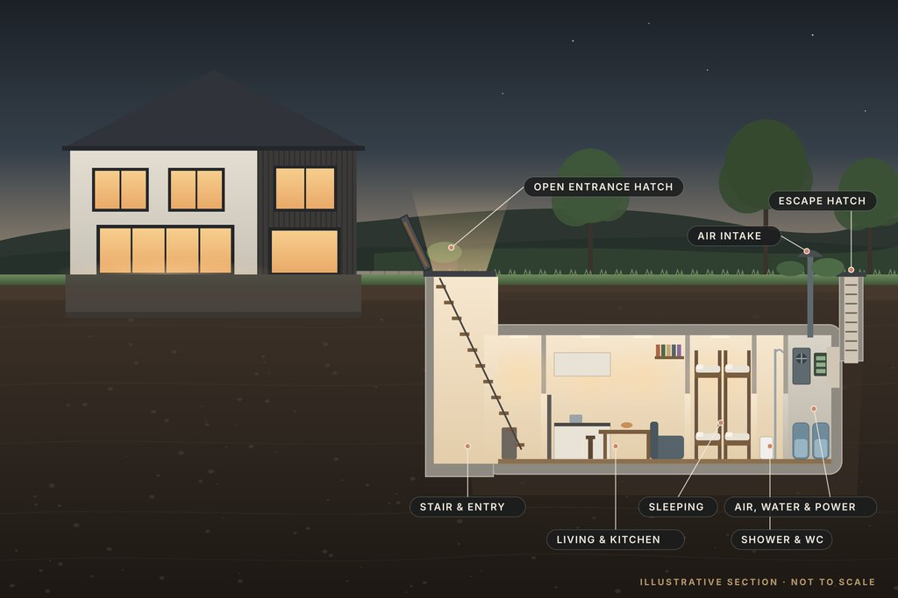

A room below the garden, built for the day you hope never comes.
Across Europe and the United States, manufacturers now build family shelters as finished homes in miniature: bedrooms, a kitchen, a shower, filtered air, stored water and their own power, reached by a discreet hatch in the lawn.
We found no Irish business that sells or installs them. This Discovery looks at what they are, how they work, what they cost abroad, and what would decide whether one could ever suit an Irish home.
The new shelter age
From Cold War relic to family design.
Some countries never stopped building shelters. Elsewhere, private makers are turning them into a home product.
The international development of residential shelters
- 370,000Shelters in Switzerland, with more places than people, according to its civil-protection office (end of 2022)
- 64,000Shelters in Sweden, with room for about 7 million people, according to its civil-protection agency
- 2014The year Berlin’s BSSD began selling shelters to private buyers
- 30+Countries where the US maker Atlas Survival Shelters says it has dealers
Why makers are building more.
Switzerland has built shelters into homes since the Cold War, aiming at a place for everyone, and Sweden and Finland keep large networks. Elsewhere, private companies now sell them directly to homeowners. In Germany, BSSD reported a 50% rise in enquiries in 2025; in the UK, Burrowed said in 2024 that it had received a couple of thousand enquiries in six months; in Sweden, the Nuclear Bunker Company says most of its buyers come from Sweden, Poland and the Netherlands.
The products have changed too. Where a Cold War shelter was a concrete box with bunks, today’s makers sell fitted interiors, quiet filtration, solar charging and finishes chosen like a kitchen’s, built to sit under a lawn or a driveway.
And in Ireland.
Ireland has no public shelter network and no shelter requirement. The Government’s Be Emergency Ready booklet, posted to about 2.2 million households from 21 September 2026, is about something more everyday: being ready to cope at home through storms, floods, power cuts and other disruption.
We found no business that makes, sells or installs residential shelters in Ireland today. That is what makes this a Discovery rather than a buying guide.
Sales and enquiry figures are the companies’ own statements to the press, not audited figures.
Life below ground
A small home, three metres down.
Sleeping, cooking, washing, air, water and power: the rooms a family shelter is planned around.
What a modern residential shelter contains

A generic layout drawn by PlotNua to show how the rooms relate. Real shelters vary widely in size, shape and specification.
-
Sleeping
Bunks, sofa beds, a double
One UK maker’s 15-metre model sleeps eight, with a sofa bed, a king-size bed and four bunks; its 9-metre model sleeps four. A Swedish maker’s 54 m² model is described for six to eight adults.
Manufacturers’ descriptions.
-
Living & kitchen
Somewhere to sit and eat
A table, seating and a kitchen run with a sink and storage. Larger models add a full kitchen and a separate living area; smaller ones a kitchenette.
Manufacturers’ descriptions.
-
Washing
A shower and a WC
Usually a composting or low-water toilet and a shower fed from stored water, with a grey-water tank. One maker specifies a vacuum WC using half a litre a flush.
Manufacturers’ descriptions.
-
Air
Filtered, not just ventilated
Makers fit filtration units sold for nuclear, biological and chemical (NBC) protection, usually with a manual backup in case the power fails.
Filter types and ratings vary by product.
-
Water
Stored and filtered
Fresh-water tanks with filtration. One maker’s four-person model carries 800 litres, treated by sediment, carbon and UV filters.
Manufacturer’s specification.
-
Power
Batteries first
Battery banks charged by solar panels or the mains, with LED lighting throughout. Some add a generator, which must be sited and vented so fumes can never reach the occupants.
Configurations vary.
A 9-metre prefabricated shelter.
Burrowed, in Nottinghamshire, makes underground shelters from a high-density polyethylene shell, 3 metres across inside, finished in its workshop and delivered complete.
- Layout
- Mud room, airtight door, shower room with composting toilet, studio living area with kitchenette; sleeps four
- Systems
- Four-stage NBC air filtration with battery backup, solar charging with batteries, LED lighting, fresh and grey water tanks
- Stated occupancy
- Designed, its brochure says, for at least two weeks without leaving
- Advertised price
- £105,000 plus 5% UK VAT, before delivery, excavation, crane, backfill and services (2025 brochure)
- Ireland
- Not confirmed. Its brochure asks for a quote anywhere outside the UK mainland, and its FAQ says it supplies only the UK and mainland Europe; neither mentions Ireland
Shown as an example of what exists, not a recommendation. PlotNua has no confirmed commercial relationship with Burrowed. Details from its published brochure and FAQ, checked 10 November 2026.
Features are not protection
Everything in this chapter is what makers say their products include. How well any shelter protects the people inside depends on its design, its installation, its certification and its upkeep. PlotNua has tested none of them, and no Irish standard for private shelters exists.
The engineering behind protection
Not a cellar with a stronger door.
Five systems separate a shelter from an ordinary underground room, and every one of them needs looking after.
How shelters are engineered
A simplified PlotNua drawing of the systems makers describe. It is not a design and shows no specific product.
- 1 · StructureThe shell carries the weight of the soil above it and anything driven over it. Where groundwater is high it must also be held down, because an empty buried box can float. One maker recommends about 1.2 metres of earth over its shelters. A chartered engineer designs the excavation and anchorage for the actual site.
- 2 · AirOutside air is drawn through particle and activated-carbon filters, and the shelter is kept at a slightly higher pressure than outside, so any leak blows outwards. One maker specifies 25 pascals; makers fit manual backups, such as a hand crank, so the air keeps moving if the power fails. Filters have a working life and need replacing.
- 3 · WaterStored fresh water, filtered, with a separate grey-water tank. Stored water has to be turned over or treated; how long it lasts depends on how many people use it.
- 4 · PowerBattery banks for lighting, the fan and pumps, charged from solar or the mains. In Ireland, most electrical work at a home must by law be done by a Registered Electrical Contractor (Safe Electric), who issues a completion certificate. Any generator must sit where its exhaust can never reach the shelter’s air.
- 5 · Ways in and outAn entrance hatch and stair with an airtight door, and a second, separate way out. A room people sleep in needs an escape route that doesn’t depend on the main door.
- And upkeepFilters, batteries, seals, pumps and water all age. At least one maker sells maintenance as a separate service; ask what the schedule is and what it costs before buying.
No guarantees
A shelter may reduce some risks. No shelter removes them, and no product named on this page has been certified for use in Ireland. Any claim about what a shelter protects against is the maker’s, and should be checked against its test documentation.
The international market
Who makes them, and what they ask.
Established makers in Britain, Germany, Sweden and the United States publish their ranges and prices. None publishes Irish prices or an Irish installer. Two US makers say they ship or install worldwide; the others don’t mention Ireland.
Residential shelter manufacturers
Burrowed
Nottinghamshire, UK
Prefabricated polyethylene shelters 6 to 16 metres long, from a structure-only kit to fully fitted. Fitted models from £92,000 (6 m) to £136,000 (16 m) plus 5% UK VAT, and luxury versions to £157,000, before delivery and installation.
Bremer Tresor
Bremen, Germany
A security company founded in 1978, best known for safes, that now lists four bunker models, two of them container units, from €68,900 to €349,000 including German VAT, all priced on request. Underground models usually need a building permit in Germany, it says.
Nuclear Bunker Company
Sweden
Three standard shelters of 13.5, 27 and 54 m², the largest for six to eight adults, from €45,000, €85,000 and €170,000. It says most buyers come from Sweden, Poland and the Netherlands.
BSSD Defence
Berlin, Germany
A shelter company founded in 2014 that designs garden bunkers, built with partner construction firms, and sells steel safe rooms. Press reports put its underground shelters from about €79,000 (9.6 m²).
Atlas Survival Shelters
Texas, USA
Steel shelters with Swiss or Israeli air filtration. It says it ships worldwide and has dealers in more than 30 countries; installation and freight are extra, and it suggests budgeting about 30% of the price to install.
Rising S Company
Texas, USA
All-steel shelters; its 3 × 12-metre (10 × 40 ft) base model is listed at US$103,900 with basic NBC air filtration included (a European NBC system is an extra), before delivery and installation. It says it delivers and installs worldwide.
From each company’s own published pages and brochures, and press reports where noted (BSSD), checked 10 November 2026. Prices are as advertised in each company’s home market and exclude delivery, excavation, installation and Irish taxes. PlotNua has no confirmed commercial relationship with the manufacturers listed. Irish availability, installation arrangements and final prices would need to be established directly with each supplier. Inclusion is not a recommendation. No photographs from these companies are shown.
Could it work in Ireland?
It depends on the ground, the garden and the rules.
A shelter is as much a groundworks project as a product. These are the questions that decide it, property by property.
Expect to need permission.
The garden-structure exemption (Class 3) was widened on 27 July 2026, but it was written for sheds, stores and garden rooms, and it excludes anything used for living in. A separate new exemption, Class 3A, covers a small detached house in a rear garden, with its own conditions and notice to the council. It was written for homes, not shelters. Neither class should be read as permitting an underground shelter; whether anything underground could fall within either is a question for a planning professional and, formally, the council.
- Shared with any shed, garden room or garage already there.
- At least 25 m² of private open space must remain.
- Only for purposes incidental to enjoying the house: not for human habitation.
- No rule or decision we found deals with a buried structure.
A shelter designed for a family to sleep in is likely to fall outside this exemption.
- The council’s formal view on whether a specific proposal is exempt.
- Worth asking before any money is spent on a shelter.
- Where it isn’t exempt, a planning application is the route.
- Protected structures and conservation areas narrow the options further.
General information, not legal or planning advice.
The site
Most of the cost and most of the risk is in the ground. These are the checks a designer and engineer would make.
- Ground conditionsTrial pits or boreholes show what’s there: clay, gravel or rock. Rock near the surface can make excavation far slower and dearer.
- GroundwaterCheck Geological Survey Ireland’s groundwater-flooding maps and look in winter. A high water table means waterproofing to a recognised standard and anchoring against flotation, or a different site.
- Excavation and accessOne maker needs room for a large excavator and a lorry with a crane, and advises keeping its shelters at least 4.5 metres from any building. Many terraced and semi-detached gardens can’t offer that.
- RadonThe EPA puts the average indoor radon level in Irish homes at about twice the worldwide average. Radon is a natural gas from the ground, and an enclosed room below ground can collect it. Check the EPA’s radon map; Building Regulations (TGD C) require radon precautions in new buildings, with more in High Radon Areas.
- Installation expertiseIreland has experienced basement builders, precast manufacturers, crane firms and structural engineers, but we found none with shelter experience. A first installation would need the maker’s own support on site.
- NeighboursDeep excavation near a boundary can affect neighbouring walls and foundations. Talk early, and let the engineer plan the temporary works.
In practice, a shelter is most likely to suit a larger, well-drained site with good access, such as a rural house, a detached house with side access, or a new build where one can be designed in from the start.
What they cost abroad.
Advertised prices in each maker’s home market. An Irish installed price isn’t known yet: delivery, excavation, engineering, installation, services, reinstatement and Irish taxes would all come on top.
| Shelter | Advertised price | What the figure is |
|---|---|---|
| Compact, for two to four | from €45,000 | Nuclear Bunker Company XS, 13.5 m²; described for a couple, listed for up to four; installation not stated |
| Family, for four | £105,000 + VAT | Burrowed 9-metre fitted model, before delivery, excavation, crane, backfill and services |
| Family, for four to six | from €85,000 | Nuclear Bunker Company M, 27 m² |
| Larger family, for six to eight | £132,000 + VAT / from €170,000 | Burrowed 15-metre fitted model (£132,000 + VAT); Nuclear Bunker Company L, 54 m² (from €170,000) |
| Premium residence | €240,000–€349,000 | Bremer Tresor Monolith (a “tactical” shelter) and Arche (its “premium residence”), including German VAT and free delivery; on request |
| Installation (a US guide) | about 30% | Of the shelter price, as one US maker suggests budgeting; Irish costs are unknown |
As published by each maker, checked 10 November 2026. None of these figures is a quote for an Irish installation.
Explore the possibility
Should Ireland have a shelter maker’s door to knock on?
Here is where that stands.
Where PlotNua stands
Where things stand.
No shelter is available through PlotNua today. We have no confirmed partnership or commercial relationship with any manufacturer, we are not a distributor or an installer, and we can’t say yet whether, when or at what price a shelter could be offered here.
PlotNua is free for homeowners and is not taking orders, deposits or quote requests for shelters. If PlotNua ever represents a manufacturer, we’ll say so plainly on this page.
Until then, the questions to ask below are the ones to put to any maker, designer or engineer directly.
SourcesWhere this information comes from
- Switzerland: Swissinfo, citing the Federal Office for Civil Protection (nearly 370,000 shelters, 9.3 million places, end of 2022). Sweden: MSB, 31 March 2025, and the Swedish Government, July 2026 (about 64,000 shelters, room for about 7 million). Nuclear Bunker Company’s customers: Euronews, 12 September 2025.
- BSSD: The Irish Times, 4 November 2025 (selling protective rooms since 2014); Business Punk, 2025 (underground shelters from about €79,000, 9.6 m²; enquiries up 50% in 2025); Tichys Einblick, 2024 (three standard sizes); web.de (works with construction partners).
- Burrowed: Bunker Brochure 2025 (models, prices, systems, occupancy, delivery, 4.5 m distance, 1.22 m earth cover) and FAQ; enquiries: LADbible, 22 November 2024.
- Bremer Tresor: Bunker kaufen (models, container and bunker types, prices on request, permit note); company founded 1978.
- Nuclear Bunker Company: nuclearbunkercompany.com (models, sizes, prices, stated occupancy).
- Pod by matla.design: pod.matla.design (800-litre water treated by sediment, activated-carbon and UV-C stages; vacuum WC; 25 Pa overpressure; hand crank; maintenance offered as a separate engagement).
- Atlas Survival Shelters: FAQ (worldwide shipping, dealers in more than 30 countries, installation and freight extra, about 30% to install, Swiss or Israeli filtration with manual backups).
- Rising S Company: price page (10 × 40 base model price; basic NBC filtration included, European system optional; delivery and installation excluded) and home page (delivers and installs worldwide).
- Ireland: Be Emergency Ready (Office of Emergency Planning), as reported by The Irish Times, 17 September 2026; Planning and Development (Exempted Development) Regulations 2026, S.I. No. 338 of 2026 (Class 3) and S.I. No. 340 of 2026 (Class 3A), as published by South Dublin County Council; Section 5 fee: Dublin City Council.
- Radon: EPA radon map and indoor-level figures (EPA, 2021); Technical Guidance Document C (radon protection in High Radon Areas). Groundwater: Geological Survey Ireland. Electrical work: Commission for Regulation of Utilities (Safe Electric).
- Engineering: ingenieur.de, “Bunker im Garten: Warum privater Schutzraumbau so kompliziert ist”, 23 March 2026 (groundwater and buoyancy).
Last checked 10 November 2026. PlotNua is an independent discovery platform and has no confirmed commercial relationship with any company named on this page. Manufacturers’ descriptions and claims are reported as theirs and have not been independently tested. The planning summary is general information, not legal advice. The hero images are AI-generated illustrations (ChatGPT), and the chapter 02 section is an AI-generated illustration (a vector drawing made with Claude). The plan and systems drawings are simplified PlotNua diagrams. None shows a real installation or a specific product.